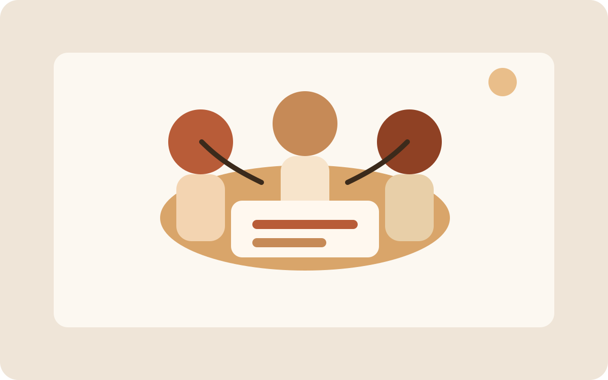

← Back to projects
Project Common Thread

Project Common Thread is an example of a project that is still early enough to be mostly questions. That is a perfectly good reason to publish a page for it.
At the planning stage, the most helpful update is usually not a polished case study. It is a concise explanation of the idea, the people it is for, and the assumptions that still need testing.
This sample page can later become a richer home for notes, design decisions, photos, or milestone updates. For now, it works as a placeholder that marks the project as active and worth revisiting.